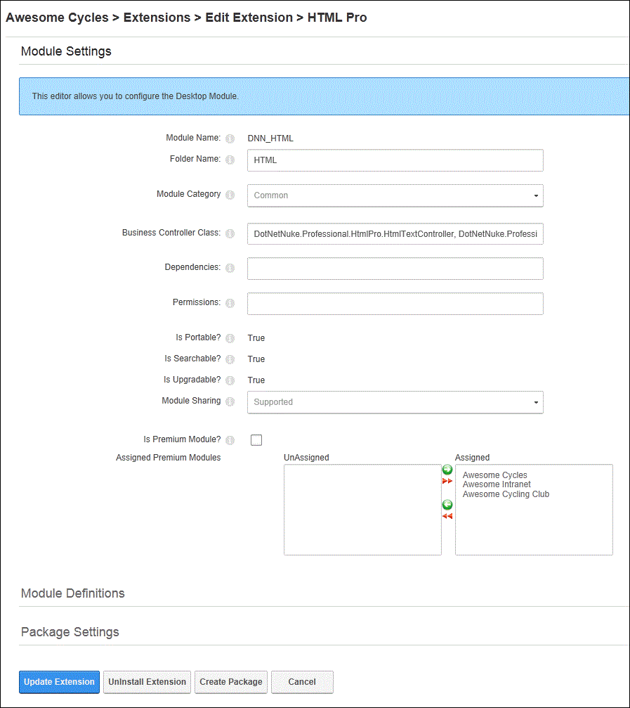

Editing Module Extension Settings
How to edit the settings of a module extension such as module name, folder name, business controller class and view if the module is IPortable, ISearchable or IUpgradable.
- Navigate to Host >
 Extensions.
Extensions.
- Select the Installed Extensions tab.
- Expand the Modules section.
- Click the Edit this Extension
 button beside the required module.
button beside the required module.
- Go to the Module Settings section and edit one or more of these fields as required:
- In the Folder Name text box, edit the name of the folder for this module.
- At Module Category, select the category this module will be listed under in the Module section of the RibbonBar Control Panel. Options are Admin, Common, Enterprise, Professional. Note: The Common category is the default category displayed in the RibbonBar therefore you should use this for the modules you use frequently.
- In the Business Controller Class text box, edit the fully qualified namespace of the class that implements the Modules Features (IPortable, ISearchable, etc.).
- In the Dependencies text box, enter any dependencies for this module.
- In the Permissions text box, enter any Code Access Security Permissions your module requires here.
- At Is Portable?, this field will display True if the module supports the IPortable interface that enables content to be exported and imported, or False if IPortable is not supported.
- At Is Searchable?, this field will display True if the module supports the ISearchable interface that enables content to be indexed, or False if search is not supported.
- At Is Upgradable?, this field will display True if the module supports the IUpgradable interface that allows it to run custom code when upgraded, or False if upgrading is not supported.
- At Module Sharing, select from these options:
- Unknown: Module sharing has not been indicated for this module. If this module is shared, a warning message will be displayed to the user explaining that it is unknown if module sharing is supported.
- Unsupported: Module sharing is not supported by this module.
- Supported: Module sharing is supported by this module.
- At Is Premium Module? select from these options:
- to set the module as premium.
- to set the modules as not premium.
- Click the Update Extension link to save any changes.
- Click the Cancel button to return to the module.

Editing Module Extension Settings